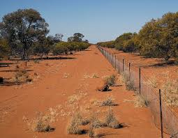
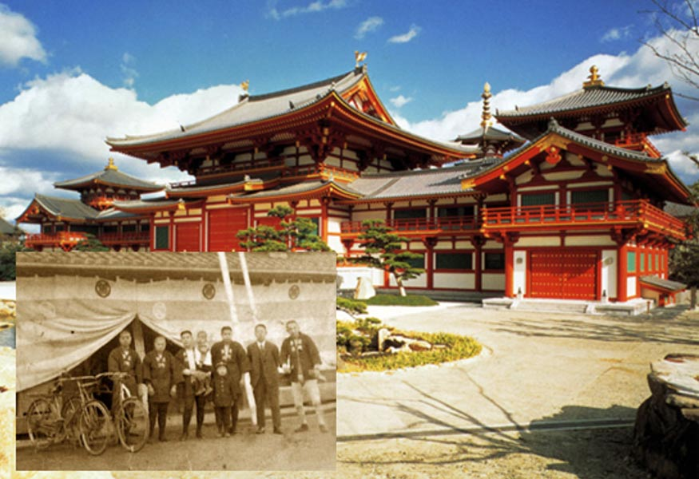
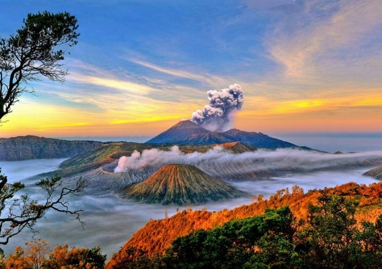

"Several unique facts about countries in the world"
Webisite ini dibuat untuk mempermudah anda dalam mencari informasi tentang berbagai wilayah didunia.
Karena Website ini berisikan juga berbagai bendera dan detail dari negara itu sendiri.
Here’s a fun fact about the United States:
The United States is home to the largest ball of twine in the world. Located in Cawker City,
Kansas,
this
gigantic ball was started by a man named Frank Stoeber in 1953 and has continued to grow as visitors
add
more twine to it. It now weighs over 20,000 spanounds and measures over 8 feet in diameter!
Here's a fun fact about Canada:
Canada has the longest coastline of any country in the world, stretching over 202,080 kilometers
(125,567
miles). This extensive coastline is bordered by the Atlantic, Pacific, and Arctic Oceans. If you
were to
walk the length of Canada's coastline, it would take more than 30 years, even if you walked 12 hours
every
day!

Here’s a fun fact about Australia:
Australia is home to the world's longest fence, known as the Dingo Fence. Originally built in
the
1880s
to
keep rabbits out of southeastern Australia’s fertile land, it is now used to keep dingoes away from
livestock. The fence stretches for approximately 5,614 kilometers (about 3,488 miles), making it
longer
than
the Great Wall of China!

Here’s a fun fact about Japan:
Japan is home to the world’s oldest continuously operating company. Kongo Gumi, a construction
company
specializing in building temples and shrines, was founded in 578 AD. It operated for over 1,400
years
before
being absorbed into another company in 2006. The longevity of Kongo Gumi highlights the deep-rooted
traditions and cultural heritage of Japan.

Here’s a fun fact about Indonesia:
Indonesia is the world's largest archipelago, consisting of over 17,000 islands. Among these
islands,
around
6,000 are inhabited. The country is also home to some of the world's most famous islands, such as
Bali,
Sumatra, and Java. This vast collection of islands gives Indonesia incredible biodiversity and
cultural
diversity, making it one of the most unique countries in the world.
Here's a fun fact about Brazil:
Brazil is the only country in South America where Portuguese is the official language. This is
because
Brazil was a colony of Portugal from 1500 until it gained its independence in 1822. The influence of
Portuguese culture and language remains strong in Brazil. setting it apart from its Spanish-speaking
neighbors.